2024 Higher Human Biology - Paper 2 questions
Source: Scottish Qualifications Authority (SQA) / Qualifications Scotland. This is a StemInteract HTML companion, not an official HTML edition. Extracted text is supplied alongside unaltered page images; use the images or original PDF for table layout, diagrams and symbols.
Jump to a question
PDF page 1
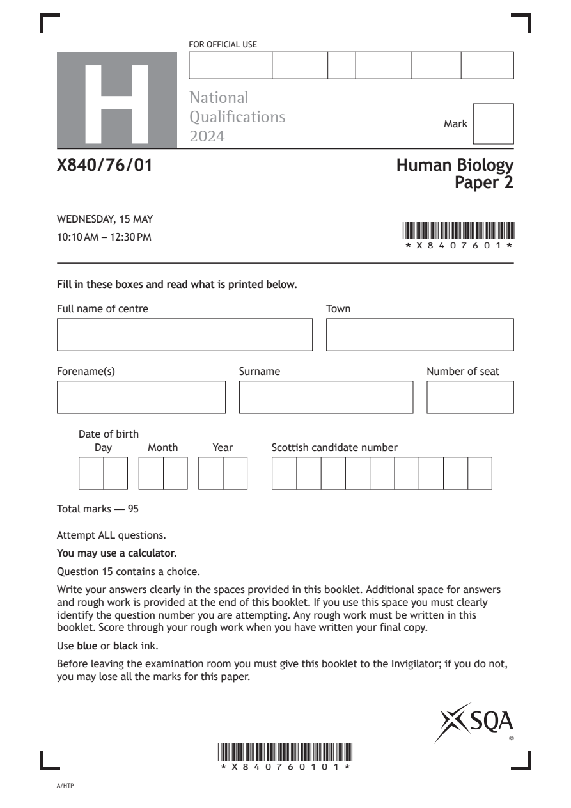
Selectable page text
FOR OFFICIAL USE
H
National
Qualications
Mark
2024
X840/76/01 Human Biology
Paper 2
WEDNESDAY, 15 MAY
10:10 AM – 12:30 PM
*X8407601*
Fill in these boxes and read what is printed below.
Full name of centre Town
Forename(s) Surname Number of seat
Date of birth
Day Month Year Scottish candidate number
Total marks — 95
Attempt ALL questions.
You may use a calculator.
Question 15 contains a choice.
Write your answers clearly in the spaces provided in this booklet. Additional space for answers
and rough work is provided at the end of this booklet. If you use this space you must clearly
identify the question number you are attempting. Any rough work must be written in this
booklet. Score through your rough work when you have written your final copy.
Use blue or black ink.
Before leaving the examination room you must give this booklet to the Invigilator; if you do not,
you may lose all the marks for this paper.
©
*X840760101*
A/HTPPDF page 2
Question 1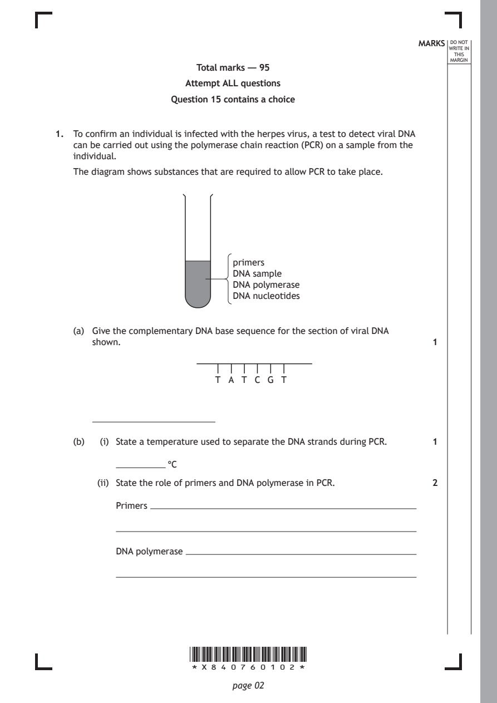
Selectable page text
MARKS DO NOT
WRITE IN
THIS
MARGIN
Total marks — 95
Attempt ALL questions
Question 15 contains a choice
1. To confirm an individual is infected with the herpes virus, a test to detect viral DNA
can be carried out using the polymerase chain reaction (PCR) on a sample from the
individual.
The diagram shows substances that are required to allow PCR to take place.
primers
DNA sample
DNA polymerase
DNA nucleotides
(a) Give the complementary DNA base sequence for the section of viral DNA
shown. 1
T A T C G T
(b) (i) State a temperature used to separate the DNA strands during PCR. 1
°C
(ii) State the role of primers and DNA polymerase in PCR. 2
Primers
DNA polymerase
*X840760102*
page 02PDF page 3
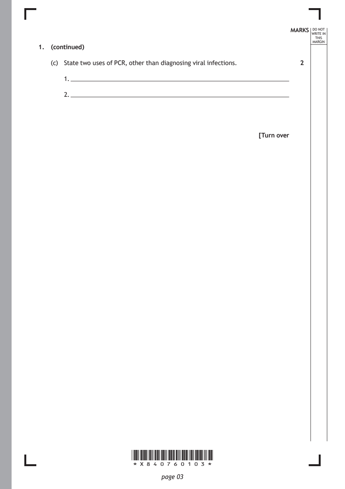
Selectable page text
MARKS DO NOT
WRITE IN
THIS
MARGIN
1. (continued)
(c) State two uses of PCR, other than diagnosing viral infections. 2
1.
2.
[Turn over
*X840760103*
page 03PDF page 4
Question 2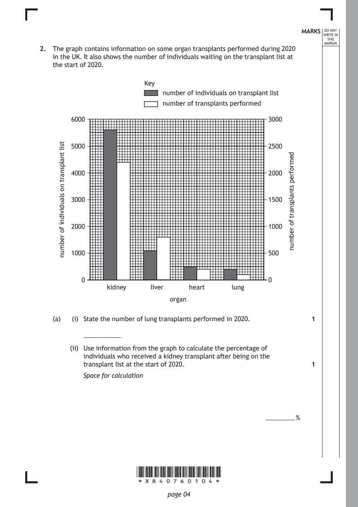
Selectable page text
MARKS DO NOT
WRITE IN
THIS
MARGIN
2. The graph contains information on some organ transplants performed during 2020
in the UK. It also shows the number of individuals waiting on the transplant list at
the start of 2020.
3000
2500
2000
1500
1000
500
0
*X840760104*
page 04
demrofrep
stnalpsnart
fo
rebmun
6000
5000
4000
3000
2000
1000
0
kidney liver heart lung
organ
tsil
tnalpsnart
no
slaudividni
fo
rebmun
Key
number of individuals on transplant list
number of transplants performed
(a) (i) State the number of lung transplants performed in 2020. 1
(ii) Use information from the graph to calculate the percentage of
individuals who received a kidney transplant after being on the
transplant list at the start of 2020. 1
Space for calculation
%PDF page 5
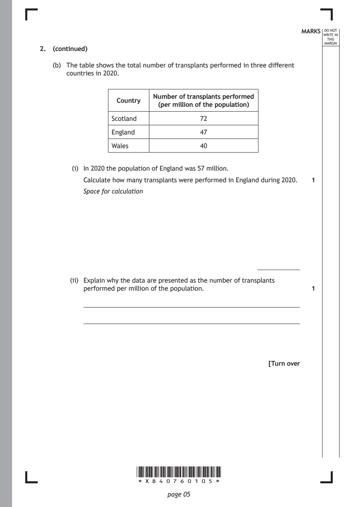
Selectable page text
MARKS DO NOT
WRITE IN
THIS
MARGIN
2. (continued)
(b) The table shows the total number of transplants performed in three different
countries in 2020.
Number of transplants performed
Country
(per million of the population)
Scotland 72
England 47
Wales 40
(i) In 2020 the population of England was 57 million.
Calculate how many transplants were performed in England during 2020. 1
Space for calculation
(ii) Explain why the data are presented as the number of transplants
performed per million of the population. 1
[Turn over
*X840760105*
page 05PDF page 6
Question 3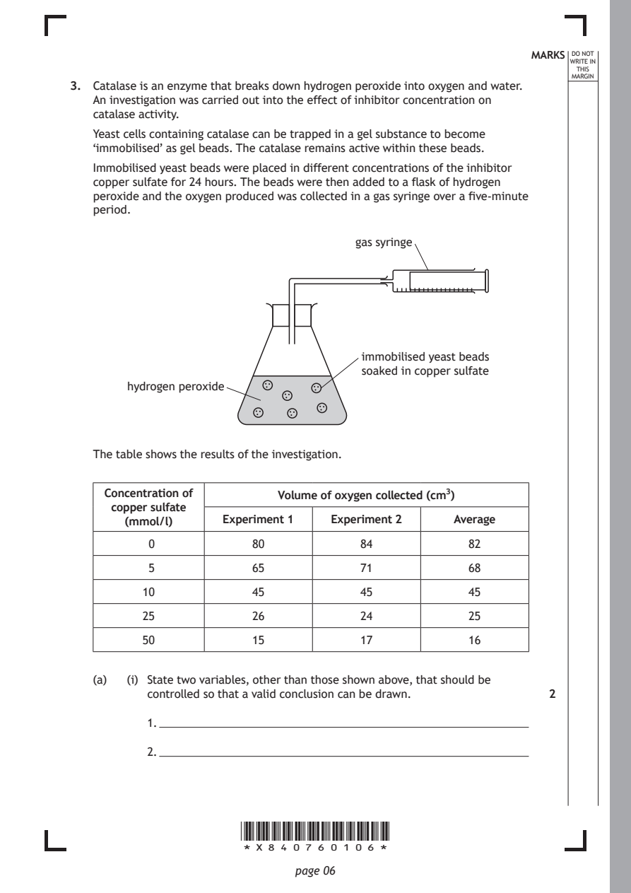
Selectable page text
MARKS DO NOT
WRITE IN
THIS
MARGIN
3. Catalase is an enzyme that breaks down hydrogen peroxide into oxygen and water.
An investigation was carried out into the effect of inhibitor concentration on
catalase activity.
Yeast cells containing catalase can be trapped in a gel substance to become
‘immobilised’ as gel beads. The catalase remains active within these beads.
Immobilised yeast beads were placed in different concentrations of the inhibitor
copper sulfate for 24 hours. The beads were then added to a flask of hydrogen
peroxide and the oxygen produced was collected in a gas syringe over a five-minute
period.
gas syringe
immobilised yeast beads
soaked in copper sulfate
hydrogen peroxide
The table shows the results of the investigation.
Concentration of Volume of oxygen collected (cm3)
copper sulfate
(mmol/l) Experiment 1 Experiment 2 Average
0 80 84 82
5 65 71 68
10 45 45 45
25 26 24 25
50 15 17 16
(a) (i) State two variables, other than those shown above, that should be
controlled so that a valid conclusion can be drawn. 2
1.
2.
*X840760106*
page 06PDF page 7
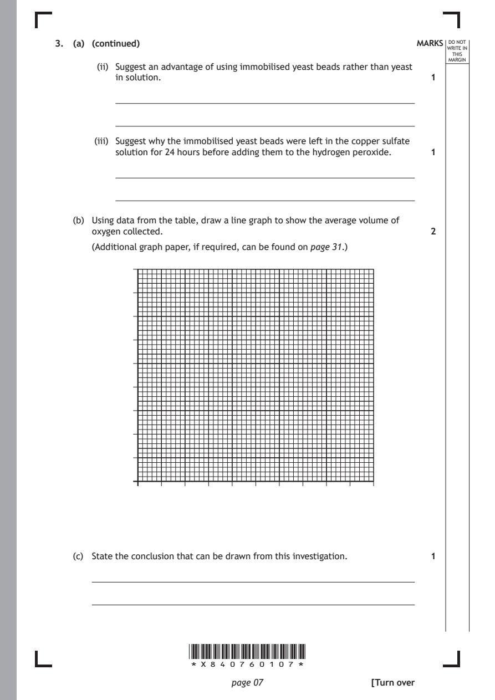
Selectable page text
3. (a) (continued) MARKS DO NOT
WRITE IN
THIS
MARGIN
(ii) Suggest an advantage of using immobilised yeast beads rather than yeast
in solution. 1
(iii) Suggest why the immobilised yeast beads were left in the copper sulfate
solution for 24 hours before adding them to the hydrogen peroxide. 1
(b) Using data from the table, draw a line graph to show the average volume of
oxygen collected. 2
(Additional graph paper, if required, can be found on page 31.)
(c) State the conclusion that can be drawn from this investigation. 1
*X840760107*
page 07 [Turn overPDF page 8
Question 4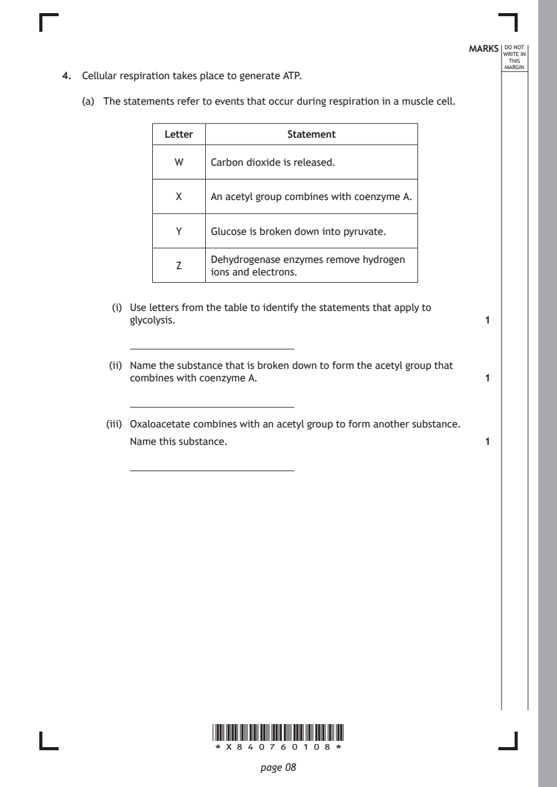
Selectable page text
MARKS DO NOT
WRITE IN
THIS
MARGIN
4. Cellular respiration takes place to generate ATP.
(a) The statements refer to events that occur during respiration in a muscle cell.
Letter Statement
W Carbon dioxide is released.
X An acetyl group combines with coenzyme A.
Y Glucose is broken down into pyruvate.
Dehydrogenase enzymes remove hydrogen
Z
ions and electrons.
(i) Use letters from the table to identify the statements that apply to
glycolysis. 1
(ii) Name the substance that is broken down to form the acetyl group that
combines with coenzyme A. 1
(iii) Oxaloacetate combines with an acetyl group to form another substance.
Name this substance. 1
*X840760108*
page 08PDF page 9
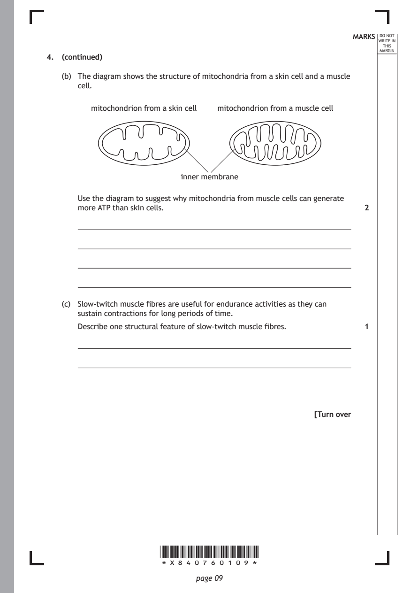
Selectable page text
MARKS DO NOT
WRITE IN
THIS
MARGIN
4. (continued)
(b) The diagram shows the structure of mitochondria from a skin cell and a muscle
cell.
mitochondrion from a skin cell mitochondrion from a muscle cell
inner membrane
Use the diagram to suggest why mitochondria from muscle cells can generate
more ATP than skin cells. 2
(c) Slow-twitch muscle fibres are useful for endurance activities as they can
sustain contractions for long periods of time.
Describe one structural feature of slow-twitch muscle fibres. 1
[Turn over
*X840760109*
page 09PDF page 10
Question 5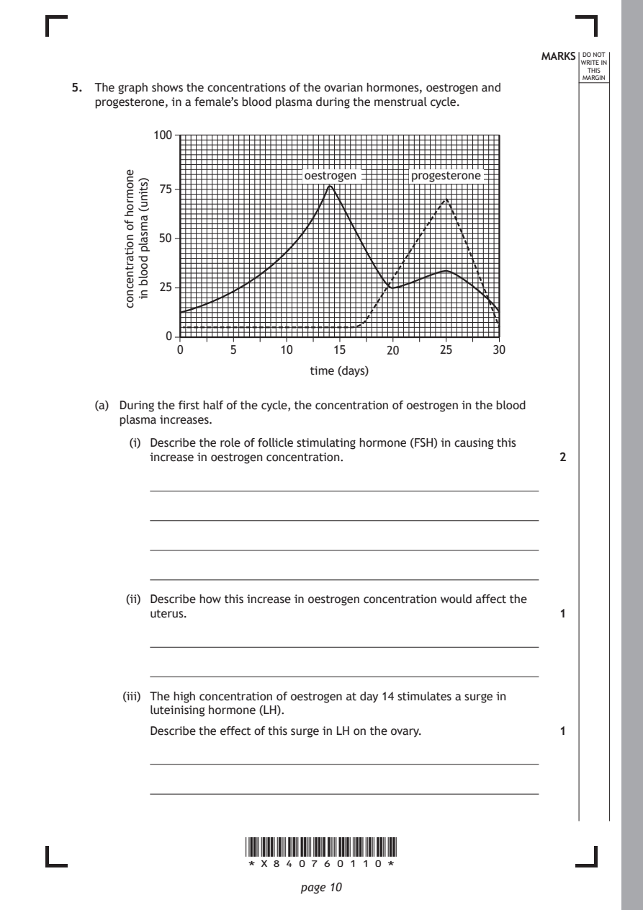
Selectable page text
MARKS DO NOT
WRITE IN
THIS
MARGIN
5. The graph shows the concentrations of the ovarian hormones, oestrogen and
progesterone, in a female’s blood plasma during the menstrual cycle.
100
75
50
25
0
0 5 10 15 20 25 30
time (days)
*X840760110*
page 10
enomroh
fo
noitartnecnoc
)stinu(
amsalp
doolb
ni
oestrogen progesterone
(a) During the first half of the cycle, the concentration of oestrogen in the blood
plasma increases.
(i) Describe the role of follicle stimulating hormone (FSH) in causing this
increase in oestrogen concentration. 2
(ii) Describe how this increase in oestrogen concentration would affect the
uterus. 1
(iii) The high concentration of oestrogen at day 14 stimulates a surge in
luteinising hormone (LH).
Describe the effect of this surge in LH on the ovary. 1PDF page 11
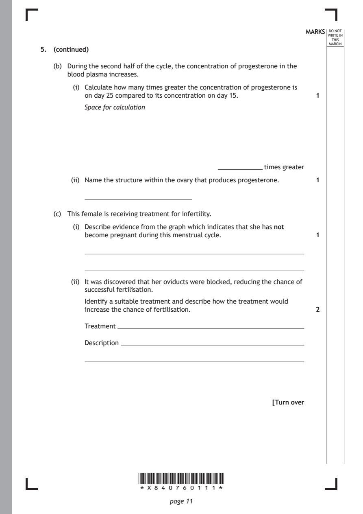
Selectable page text
MARKS DO NOT
WRITE IN
THIS
MARGIN
5. (continued)
(b) During the second half of the cycle, the concentration of progesterone in the
blood plasma increases.
(i) Calculate how many times greater the concentration of progesterone is
on day 25 compared to its concentration on day 15. 1
Space for calculation
times greater
(ii) Name the structure within the ovary that produces progesterone. 1
(c) This female is receiving treatment for infertility.
(i) Describe evidence from the graph which indicates that she has not
become pregnant during this menstrual cycle. 1
(ii) It was discovered that her oviducts were blocked, reducing the chance of
successful fertilisation.
Identify a suitable treatment and describe how the treatment would
increase the chance of fertilisation. 2
Treatment
Description
[Turn over
*X840760111*
page 11PDF page 12
Question 6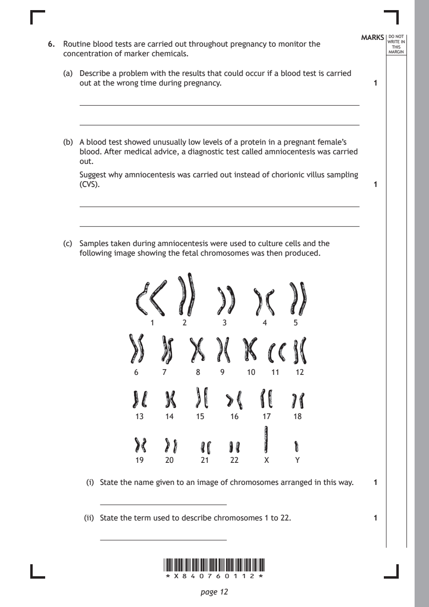
Selectable page text
MARKS DO NOT
6. Routine blood tests are carried out throughout pregnancy to monitor the WRITE IN
THIS
concentration of marker chemicals. MARGIN
(a) Describe a problem with the results that could occur if a blood test is carried
out at the wrong time during pregnancy. 1
(b) A blood test showed unusually low levels of a protein in a pregnant female’s
blood. After medical advice, a diagnostic test called amniocentesis was carried
out.
Suggest why amniocentesis was carried out instead of chorionic villus sampling
(CVS). 1
(c) Samples taken during amniocentesis were used to culture cells and the
following image showing the fetal chromosomes was then produced.
1 2 3 4 5
6 7 8 9 10 11 12
13 14 15 16 17 18
19 20 21 22 X Y
(i) State the name given to an image of chromosomes arranged in this way. 1
(ii) State the term used to describe chromosomes 1 to 22. 1
*X840760112*
page 12PDF page 13
Selectable page text
[Turn over for next question
DO NOT WRITE ON THIS PAGE
*X840760113*
page 13PDF page 14
Question 7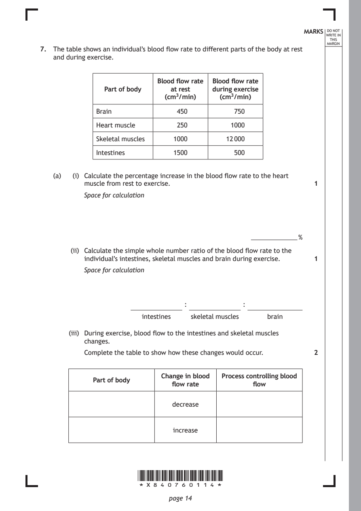
Selectable page text
MARKS DO NOT
WRITE IN
THIS
MARGIN
7. The table shows an individual’s blood flow rate to different parts of the body at rest
and during exercise.
Blood flow rate Blood flow rate
Part of body at rest during exercise
(cm3/min) (cm3/min)
Brain 450 750
Heart muscle 250 1000
Skeletal muscles 1000 12 000
Intestines 1500 500
(a) (i) Calculate the percentage increase in the blood flow rate to the heart
muscle from rest to exercise. 1
Space for calculation
%
(ii) Calculate the simple whole number ratio of the blood flow rate to the
individual’s intestines, skeletal muscles and brain during exercise. 1
Space for calculation
: :
intestines skeletal muscles brain
(iii) During exercise, blood flow to the intestines and skeletal muscles
changes.
Complete the table to show how these changes would occur. 2
Change in blood Process controlling blood
Part of body
flow rate flow
decrease
increase
*X840760114*
page 14PDF page 15
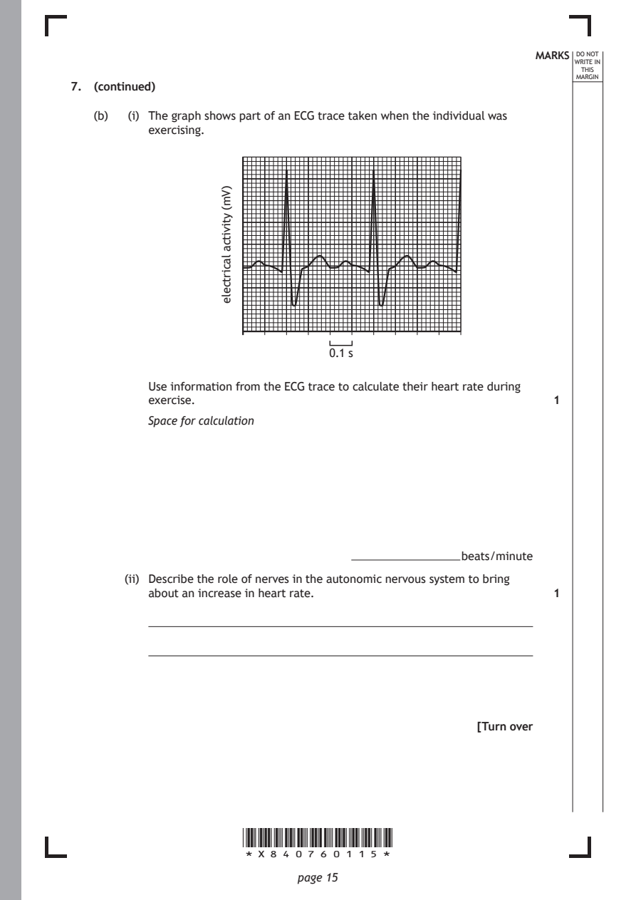
Selectable page text
MARKS DO NOT
WRITE IN
THIS
MARGIN
7. (continued)
(b) (i) The graph shows part of an ECG trace taken when the individual was
exercising.
*X840760115*
page 15
)Vm(
ytivitca
lacirtcele
0.1 s
Use information from the ECG trace to calculate their heart rate during
exercise. 1
Space for calculation
beats/minute
(ii) Describe the role of nerves in the autonomic nervous system to bring
about an increase in heart rate. 1
[Turn overPDF page 16
Question 8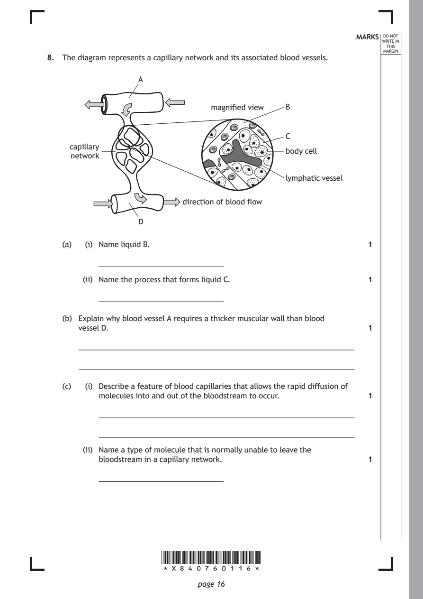
Selectable page text
MARKS DO NOT
WRITE IN
THIS
MARGIN
8. The diagram represents a capillary network and its associated blood vessels.
A
magnified view B
C
capillary
body cell
network
lymphatic vessel
direction of blood flow
D
(a) (i) Name liquid B. 1
(ii) Name the process that forms liquid C. 1
(b) Explain why blood vessel A requires a thicker muscular wall than blood
vessel D. 1
(c) (i) Describe a feature of blood capillaries that allows the rapid diffusion of
molecules into and out of the bloodstream to occur. 1
(ii) Name a type of molecule that is normally unable to leave the
bloodstream in a capillary network. 1
*X840760116*
page 16PDF page 17
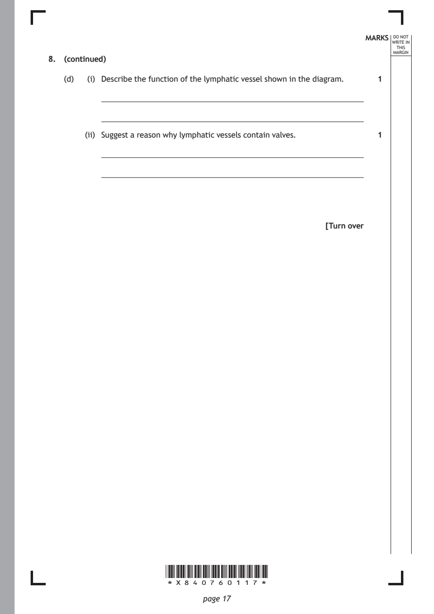
Selectable page text
MARKS DO NOT
WRITE IN
THIS
MARGIN
8. (continued)
(d) (i) Describe the function of the lymphatic vessel shown in the diagram. 1
(ii) Suggest a reason why lymphatic vessels contain valves. 1
[Turn over
*X840760117*
page 17PDF page 18
Question 9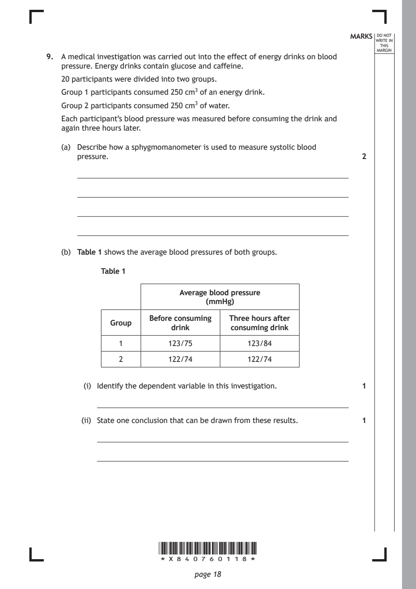
Selectable page text
MARKS DO NOT
WRITE IN
THIS
MARGIN
9. A medical investigation was carried out into the effect of energy drinks on blood
pressure. Energy drinks contain glucose and caffeine.
20 participants were divided into two groups.
Group 1 participants consumed 250 cm3 of an energy drink.
Group 2 participants consumed 250 cm3 of water.
Each participant’s blood pressure was measured before consuming the drink and
again three hours later.
(a) Describe how a sphygmomanometer is used to measure systolic blood
pressure. 2
(b) Table 1 shows the average blood pressures of both groups.
Table 1
Average blood pressure
(mmHg)
Before consuming Three hours after
Group
drink consuming drink
1 123/75 123/84
2 122/74 122/74
(i) Identify the dependent variable in this investigation. 1
(ii) State one conclusion that can be drawn from these results. 1
*X840760118*
page 18PDF page 19
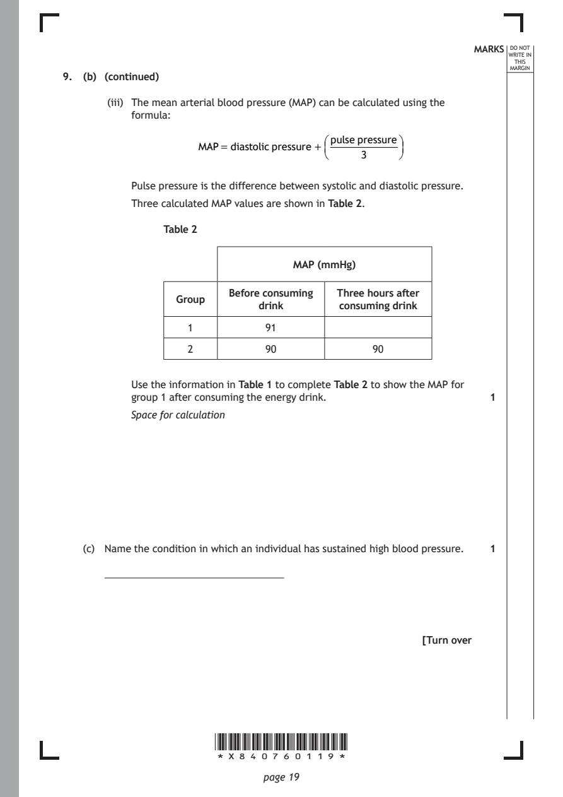
Selectable page text
MARKS DO NOT
WRITE IN
THIS
MARGIN
9. (b) (continued)
(iii) The mean arterial blood pressure (MAP) can be calculated using the
formula:
pulsepressure
MAP= diastolicpressure +
3
Pulse pressure is the difference between systolic and diastolic pressure.
Three calculated MAP values are shown in Table 2.
Table 2
MAP (mmHg)
Before consuming Three hours after
Group
drink consuming drink
1 91
2 90 90
Use the information in Table 1 to complete Table 2 to show the MAP for
group 1 after consuming the energy drink. 1
Space for calculation
(c) Name the condition in which an individual has sustained high blood pressure. 1
[Turn over
*X840760119*
page 19PDF page 20
Question 10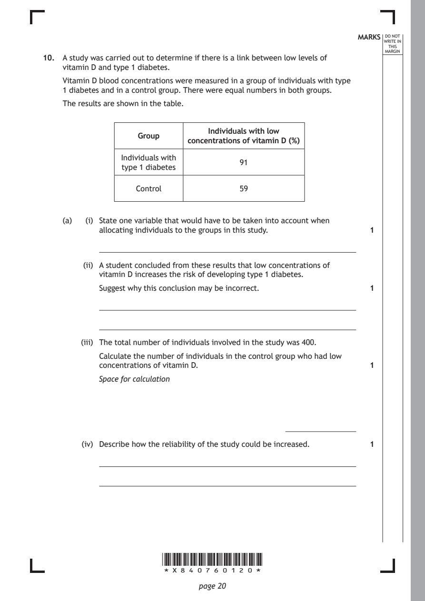
Selectable page text
MARKS DO NOT
WRITE IN
THIS
MARGIN
10. A study was carried out to determine if there is a link between low levels of
vitamin D and type 1 diabetes.
Vitamin D blood concentrations were measured in a group of individuals with type
1 diabetes and in a control group. There were equal numbers in both groups.
The results are shown in the table.
Individuals with low
Group
concentrations of vitamin D (%)
Individuals with
91
type 1 diabetes
Control 59
(a) (i) State one variable that would have to be taken into account when
allocating individuals to the groups in this study. 1
(ii) A student concluded from these results that low concentrations of
vitamin D increases the risk of developing type 1 diabetes.
Suggest why this conclusion may be incorrect. 1
(iii) The total number of individuals involved in the study was 400.
Calculate the number of individuals in the control group who had low
concentrations of vitamin D. 1
Space for calculation
(iv) Describe how the reliability of the study could be increased. 1
*X840760120*
page 20PDF page 21
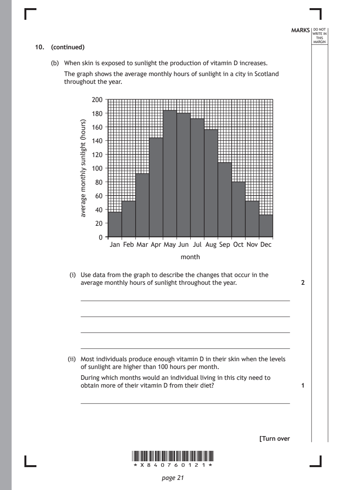
Selectable page text
MARKS DO NOT
WRITE IN
THIS
MARGIN
10. (continued)
(b) When skin is exposed to sunlight the production of vitamin D increases.
The graph shows the average monthly hours of sunlight in a city in Scotland
throughout the year.
200
180
160
140
120
100
80
60
40
20
0
*X840760121*
page 21
)sruoh(
thgilnus
ylhtnom
egareva
Jan Feb Mar Apr May Jun Jul Aug Sep Oct Nov Dec
month
(i) Use data from the graph to describe the changes that occur in the
average monthly hours of sunlight throughout the year. 2
(ii) Most individuals produce enough vitamin D in their skin when the levels
of sunlight are higher than 100 hours per month.
During which months would an individual living in this city need to
obtain more of their vitamin D from their diet? 1
[Turn overPDF page 22
Question 11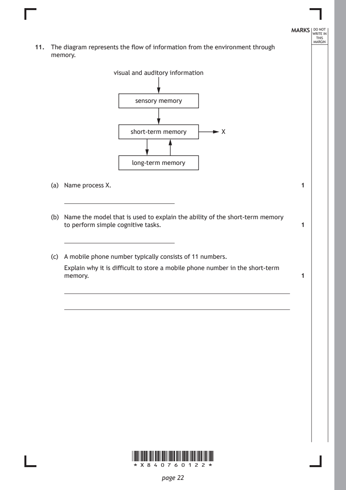
Selectable page text
MARKS DO NOT
WRITE IN
THIS
MARGIN
11. The diagram represents the flow of information from the environment through
memory.
visual and auditory information
sensory memory
short-term memory X
long-term memory
(a) Name process X. 1
(b) Name the model that is used to explain the ability of the short-term memory
to perform simple cognitive tasks. 1
(c) A mobile phone number typically consists of 11 numbers.
Explain why it is difficult to store a mobile phone number in the short-term
memory. 1
*X840760122*
page 22PDF page 23
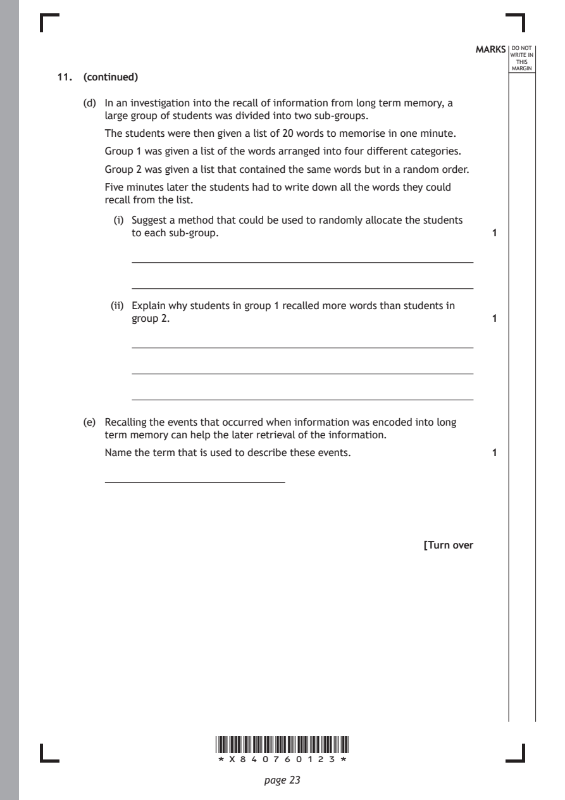
Selectable page text
MARKS DO NOT
WRITE IN
THIS
MARGIN
11. (continued)
(d) In an investigation into the recall of information from long term memory, a
large group of students was divided into two sub-groups.
The students were then given a list of 20 words to memorise in one minute.
Group 1 was given a list of the words arranged into four different categories.
Group 2 was given a list that contained the same words but in a random order.
Five minutes later the students had to write down all the words they could
recall from the list.
(i) Suggest a method that could be used to randomly allocate the students
to each sub-group. 1
(ii) Explain why students in group 1 recalled more words than students in
group 2. 1
(e) Recalling the events that occurred when information was encoded into long
term memory can help the later retrieval of the information.
Name the term that is used to describe these events. 1
[Turn over
*X840760123*
page 23PDF page 24
Question 12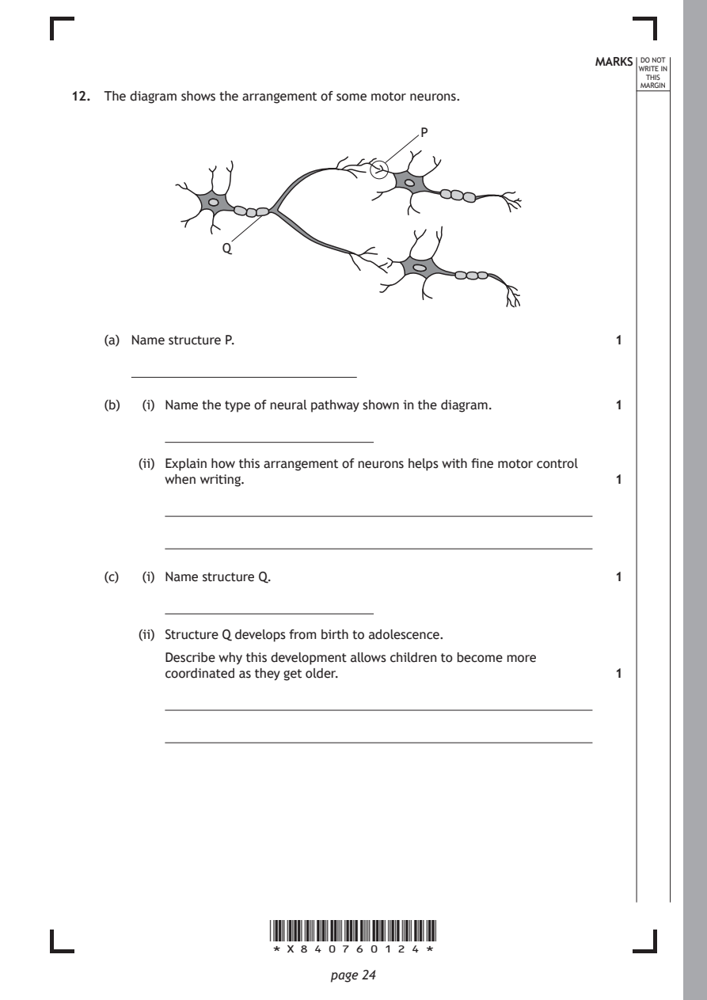
Selectable page text
MARKS DO NOT
WRITE IN
THIS
MARGIN
12. The diagram shows the arrangement of some motor neurons.
P
Q
(a) Name structure P. 1
(b) (i) Name the type of neural pathway shown in the diagram. 1
(ii) Explain how this arrangement of neurons helps with fine motor control
when writing. 1
(c) (i) Name structure Q. 1
(ii) Structure Q develops from birth to adolescence.
Describe why this development allows children to become more
coordinated as they get older. 1
*X840760124*
page 24PDF page 25
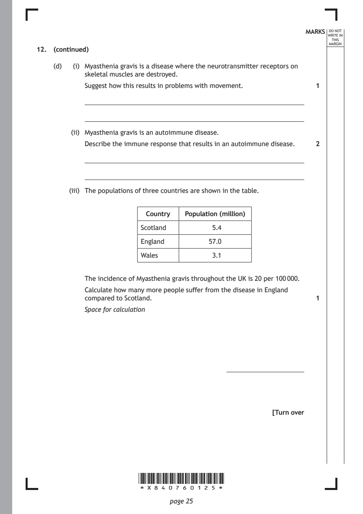
Selectable page text
MARKS DO NOT
WRITE IN
THIS
MARGIN
12. (continued)
(d) (i) Myasthenia gravis is a disease where the neurotransmitter receptors on
skeletal muscles are destroyed.
Suggest how this results in problems with movement. 1
(ii) Myasthenia gravis is an autoimmune disease.
Describe the immune response that results in an autoimmune disease. 2
(iii) The populations of three countries are shown in the table.
Country Population (million)
Scotland 5.4
England 57.0
Wales 3.1
The incidence of Myasthenia gravis throughout the UK is 20 per 100 000.
Calculate how many more people suffer from the disease in England
compared to Scotland. 1
Space for calculation
[Turn over
*X840760125*
page 25PDF page 26
Question 13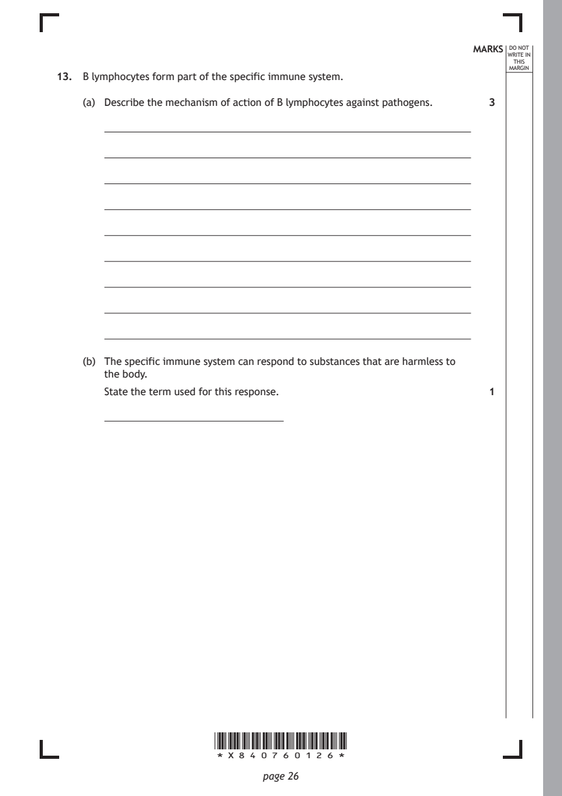
Selectable page text
MARKS DO NOT
WRITE IN
THIS
MARGIN
13. B lymphocytes form part of the specific immune system.
(a) Describe the mechanism of action of B lymphocytes against pathogens. 3
(b) The specific immune system can respond to substances that are harmless to
the body.
State the term used for this response. 1
*X840760126*
page 26PDF page 27
Question 14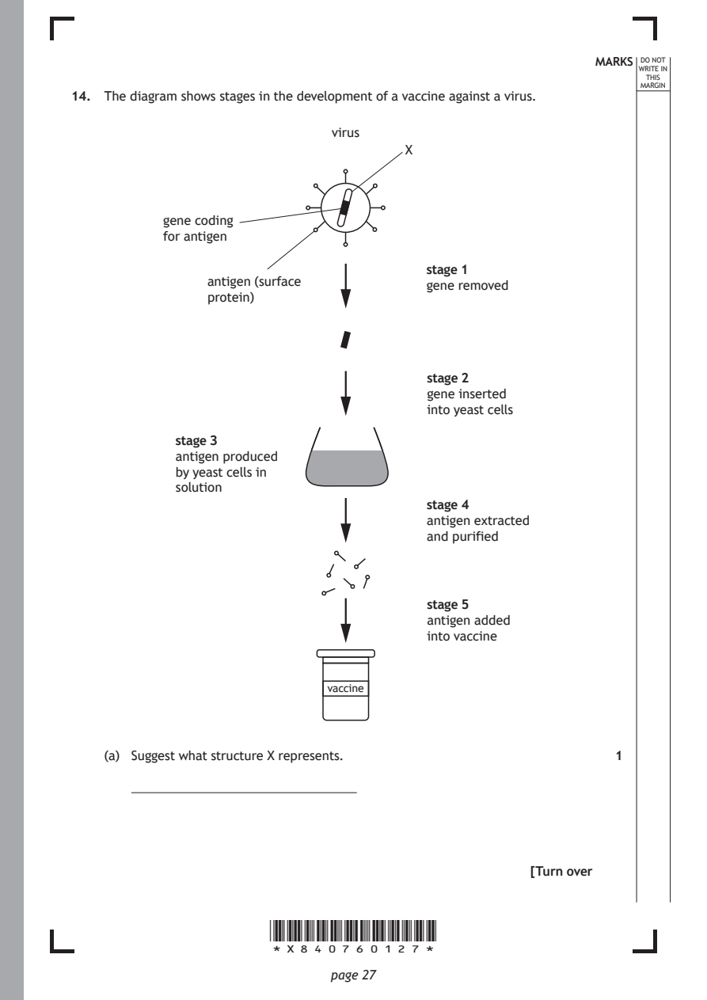
Selectable page text
MARKS DO NOT
WRITE IN
THIS
MARGIN
14. The diagram shows stages in the development of a vaccine against a virus.
virus
X
gene coding
for antigen
stage 1
antigen (surface gene removed
protein)
stage 2
gene inserted
into yeast cells
stage 3
antigen produced
by yeast cells in
solution
stage 4
antigen extracted
and purified
stage 5
antigen added
into vaccine
vaccine
(a) Suggest what structure X represents. 1
[Turn over
*X840760127*
page 27PDF page 28
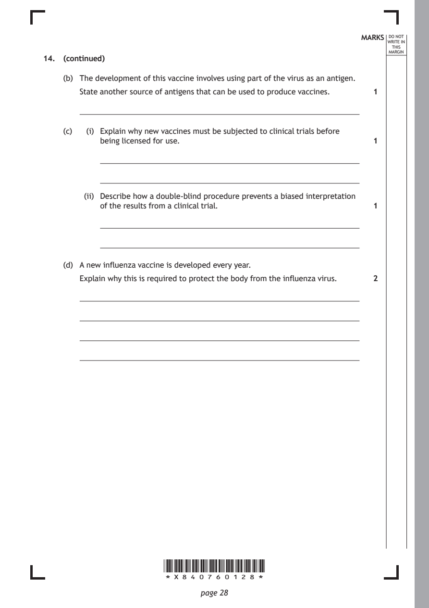
Selectable page text
MARKS DO NOT
WRITE IN
THIS
MARGIN
14. (continued)
(b) The development of this vaccine involves using part of the virus as an antigen.
State another source of antigens that can be used to produce vaccines. 1
(c) (i) Explain why new vaccines must be subjected to clinical trials before
being licensed for use. 1
(ii) Describe how a double-blind procedure prevents a biased interpretation
of the results from a clinical trial. 1
(d) A new influenza vaccine is developed every year.
Explain why this is required to protect the body from the influenza virus. 2
*X840760128*
page 28PDF page 29
Question 15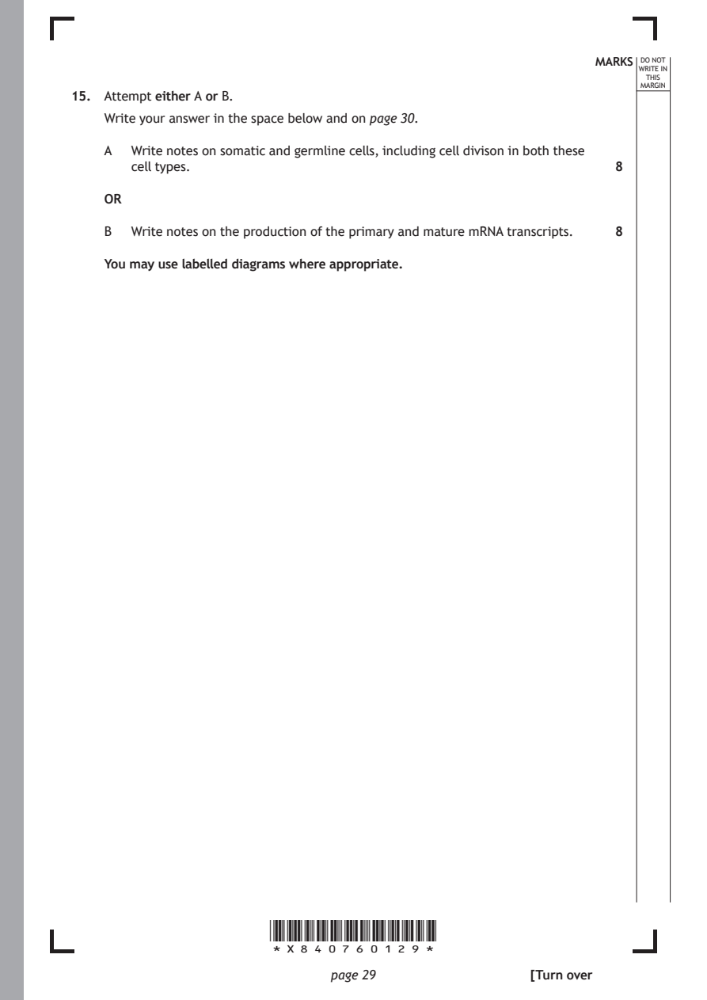
Selectable page text
MARKS DO NOT
WRITE IN
THIS
MARGIN
15. Attempt either A or B.
Write your answer in the space below and on page 30.
A Write notes on somatic and germline cells, including cell divison in both these
cell types. 8
OR
B Write notes on the production of the primary and mature mRNA transcripts. 8
You may use labelled diagrams where appropriate.
*X840760129*
page 29 [Turn overPDF page 30
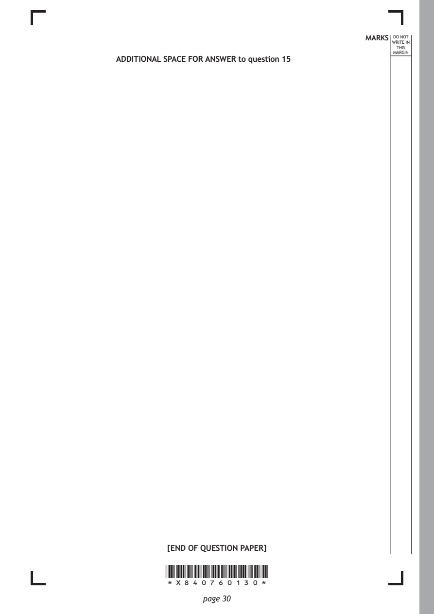
Selectable page text
MARKS DO NOT
WRITE IN
THIS
MARGIN
ADDITIONAL SPACE FOR ANSWER to question 15
[END OF QUESTION PAPER]
*X840760130*
page 30PDF page 31
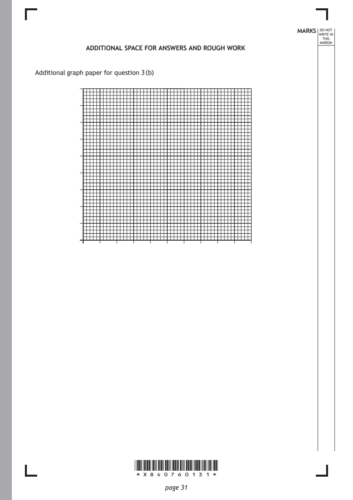
Selectable page text
MARKS DO NOT
WRITE IN
THIS
MARGIN
ADDITIONAL SPACE FOR ANSWERS AND ROUGH WORK
Additional graph paper for question 3 (b)
*X840760131*
page 31PDF page 32
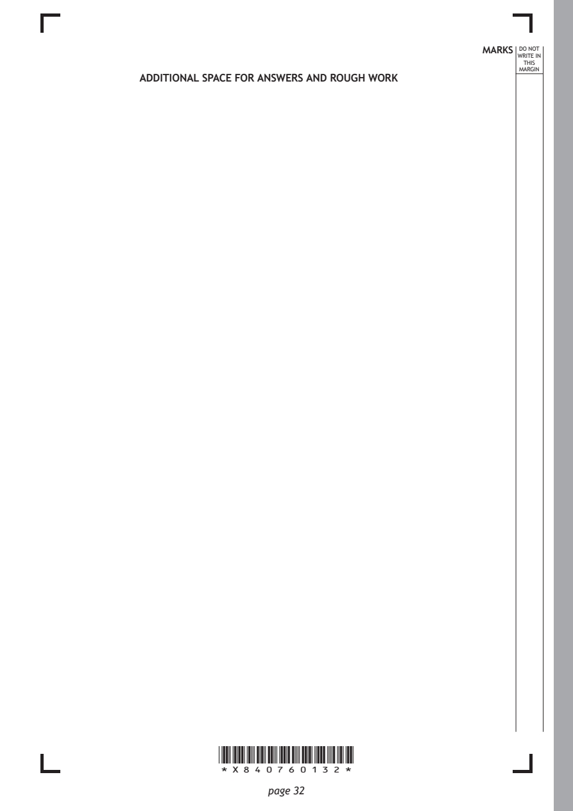
Selectable page text
MARKS DO NOT
WRITE IN
THIS
MARGIN
ADDITIONAL SPACE FOR ANSWERS AND ROUGH WORK
*X840760132*
page 32PDF page 33

Selectable page text
MARKS DO NOT
WRITE IN
THIS
MARGIN
ADDITIONAL SPACE FOR ANSWERS AND ROUGH WORK
*X840760133*
page 33PDF page 34

Selectable page text
[BLANK PAGE]
DO NOT WRITE ON THIS PAGE
*X840760134*
page 34PDF page 35

Selectable page text
[BLANK PAGE]
DO NOT WRITE ON THIS PAGE
*X840760135*
page 35PDF page 36
Selectable page text
[BLANK PAGE]
DO NOT WRITE ON THIS PAGE
*X840760136*
page 36